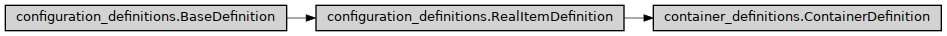

ContainerDefinition
- class ase2sprkkr.common.container_definitions.ContainerDefinition(name, members=[], alternative_names=[], info=None, description=None, is_optional=False, is_hidden=False, is_expert=False, has_hidden_members=False, name_in_grammar=None, force_order=None, write_alternative_name=False, result_class=None, is_repeated=False)[source]
Base class for a definition (of contained data, format, etc) of either a whole configuration file (e.g.
InputParametersor e.g.Potential) or itsSection.Class hierarchy
Constructor
- Parameters
write_alternative_name (bool) –
- __init__(name, members=[], alternative_names=[], info=None, description=None, is_optional=False, is_hidden=False, is_expert=False, has_hidden_members=False, name_in_grammar=None, force_order=None, write_alternative_name=False, result_class=None, is_repeated=False)[source]
Definition of container (e.g. section of an input file). For the rest of the parameters see the
RealItemDefinition.- Parameters
has_hidden_members (bool) – If true, this section is not intended for a direct editing
is_repeated (bool or string) – The section can be repeated. The name of the section appears only once on the beginning (this differs from ValueDefinition.is_repeated #TODO - merge the meaning of the swtich). If a non-empty string is given, the values are divided by the string.
force_order (bool) – If True, the items has to retain the order, if False, the items can be in the input file in any order.
write_alternative_name (bool) –
- value_name_format = None
The (print) format, how the name is written
- write_last_delimiter = True
- static _dict_from_named_values(args, items=None)[source]
auxiliary method that creates dictionary from the arguments
- force_order = False
Force order of its members
- configuration_type_name = 'SECTION'
Name of the container type in the runtime documentation
- data_description(verbose=False, show_hidden=False, prefix='')[source]
Return the runtime documentation for the configuration described by this object.
- Parameters
verbose (Union[bool, str, int]) – If
False, only one line with the section name and basic info is returned. IfTrue, the items contained in the section are listed. If'all', add also detailed info about all descendants. If anintis given, print detailed informations about n levels. I.e.1is the same asTrueshow_hidden (bool) – If False, do not show hidden members.
prefix (str) – The string, with with each line will begin (commonly the spaces for the indentation).
- additional_data_description(verbose=False, show_hidden=False, prefix='')[source]
Return the description (documentation for runtime) of the items in the container.
- Parameters
verbose (Union[bool, str, int]) – If
True, include detailed description of the children. If'all', include even detailed description. Ifintis given, print detailed informations up to n levels.show_hidden – If False, do not show hidden members.
prefix (str) – The string, with with each line will begin (commonly the spaces for the indentation).
- copy(args=[], items=[], remove=[], defaults={}, **kwargs)[source]
Copy the section with the contained values modified by the arguments.
- copy_member(name)[source]
Copy a member, allowing to redefine its properties.
- Returns
new_mebere – The newly created member
- Return type
- _grammar_of_values(allow_dangerous=False, delimiter=None)[source]
- Parameters
allow_dangerous (bool) –
- _allow_duplicates_of(name)[source]
Can a given element (identified by name) have more values in the parsed results? (However, not all definitions have to specify allow_duplicates, just the ones that have a value). For the others, this function raises an error.
- classmethod delimited_custom_value_grammar()[source]
Return the grammar for the custom child with delimiter. The delimiter can delimite it either from the previous child or from the section name.
- custom_name_characters = 'ABCDEFGHIJKLMNOPQRSTUVWXYZabcdefghijklmnopqrstuvwxyz0123456789_-()'
Which characters can appears in an unknown child (value/section) name
- _first_section_has_to_be_first()[source]
Has/ve the first child(s) in an unordered sequence fixed position?
- parse_file(file, return_value_only=True, allow_dangerous=False)[source]
Parse the file, return the parsed data as dictionary
- parse(string, whole_string=True, return_value_only=True, allow_dangerous=False)[source]
Parse the string, return the parsed data as dictionary
- parse_return(val, return_value_only=True)[source]
Clean up the parsed values (unpack then from unnecessary containers)
- Parameters
return_value_only (bool) – Return only value, not name - value tuple
- async parse_from_stream(stream, up_to, start=None, whole_string=True, return_value_only=True, allow_dangerous=False)[source]
Parse string readed from asyncio stream. The stream is readed up to the given delimiter
- read_from_file(file, allow_dangerous=False, **kwargs)[source]
Read a configuration file and return the parsed Configuration object
- validate(container, why='save')[source]
A function for validation of just the parsed result (not the user input)
- Parameters
why (str) –
- repeated_class
Class for the repeated sections
alias of
RepeatedConfigurationContainer
- create_object(container=None, repeated=True)[source]
Create an instance (section)
- container: BaseConfigurationContainer
To which container the created object will belong
- repeated:
Has meaning only for a is_repeated section. Then, if it is True, a Container for repeated values of the section is returned. Otherwise, the container just for one instance of a section is returned.
- Parameters
repeated (bool) –
- _save_to_file(file, value, always=False, name_in_grammar=None, delimiter='')[source]
Save the content of the container to the file (according to the definition)
- Parameters
file (file) – File object (open for writing), where the data should be written
always – Do not consider conditions
- Returns
If any value have been written return True, otherwise return False.
- Return type
something_have_been_written